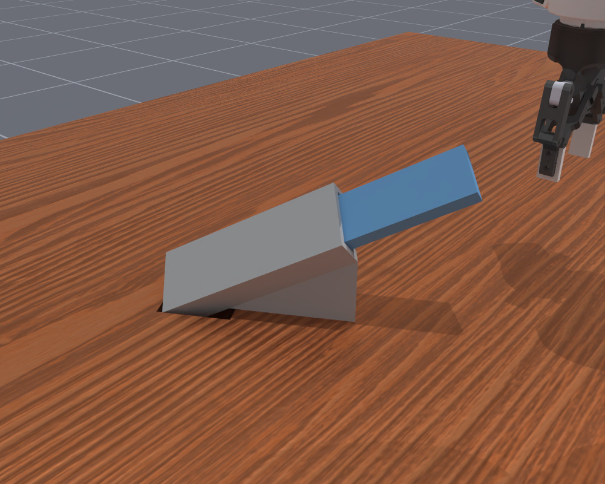
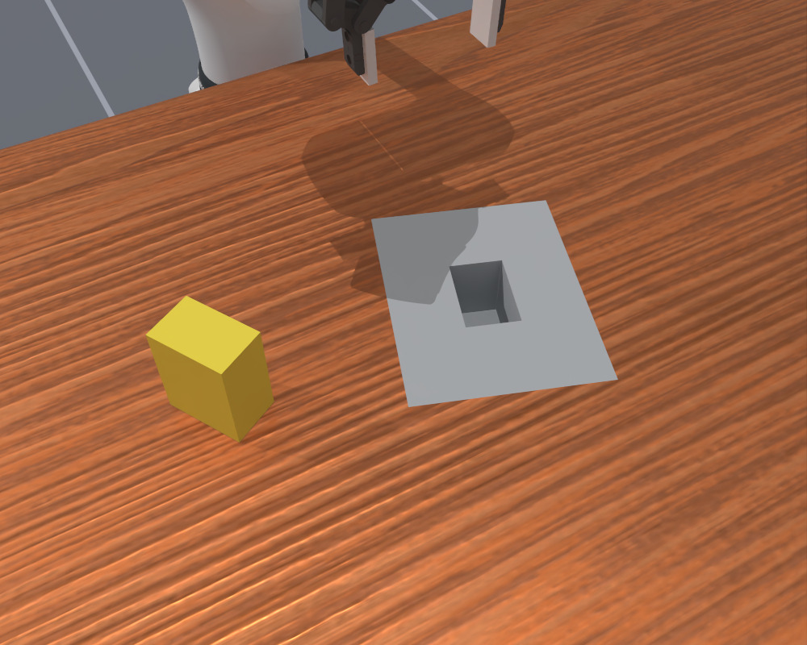
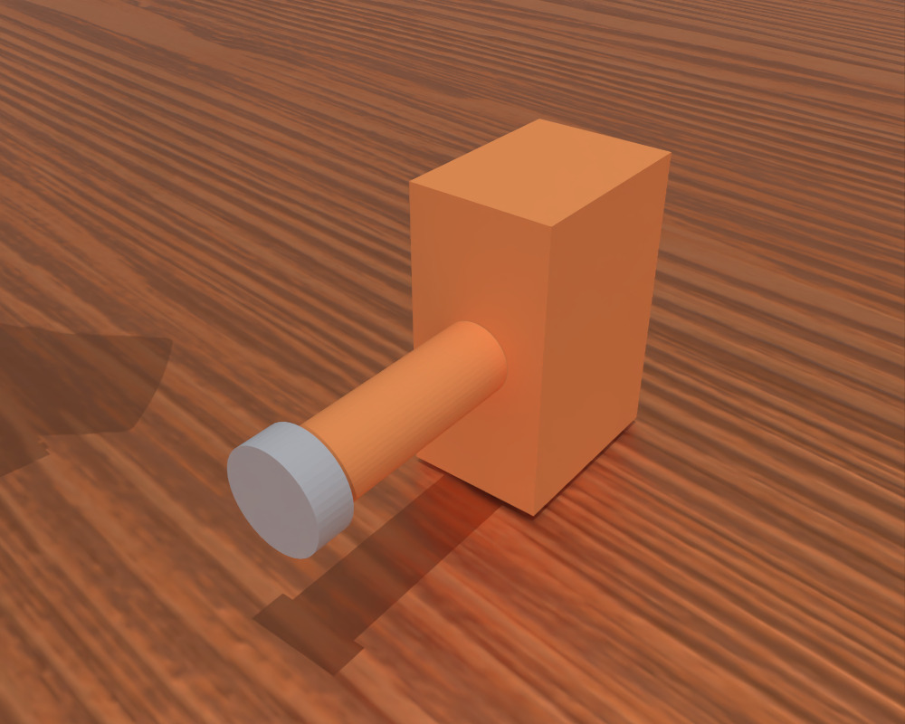
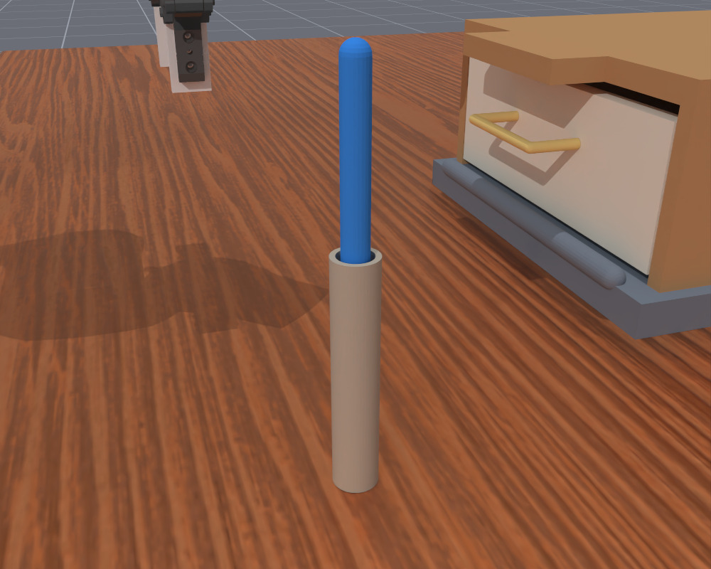
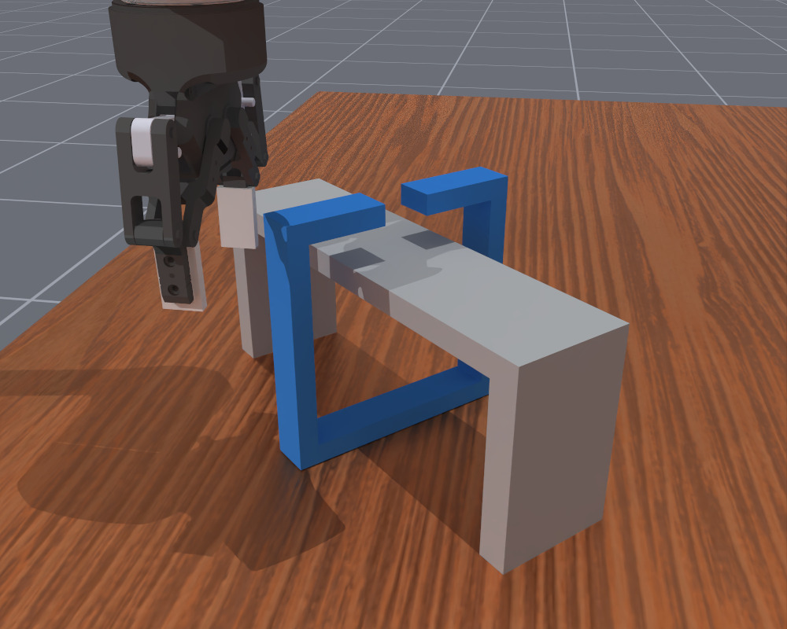

Introduction
Over the past month, one of the biggest stories in robotics has been the strong robot-control performance of OpenAI's newly released GPT-6 Astra (which we call Astra throughout this post), with some even hailing it as "state of the art" [1, 2, 3, 4]. The idea of using language models for embodied tasks itself is actually not new [5, 6, 7, 8], but Astra takes the "LLM part" (we use "LLM" broadly to include multimodal language models throughout this post) further into lower-level control: it can now observe a scene, reason about what to do, directly generate actions, and repeat the process in response to changes in the environment. This allows the model to handle aspects of physical interaction that are difficult to capture through sparse, discrete, and sometimes ambiguous high-level plans alone before.
Beyond Astra's extraordinary semantic understanding of largely static scenes—recognizing objects, interpreting instructions, and reasoning about spatial relationships, which are already familiar and largely expected—what excites us more is its seemingly solid grasp of control logic and motion dynamics. This makes us curious about just how well Astra actually understands these concepts.
Can it anticipate how its commands will move the robot and affect the objects around it? Can it account for contact and geometric constraints, and adjust when the resulting motion differs from what it expected? In this blog, we investigate these questions through a series of experiments.
Ditto-Bench
To investigate how well Astra understands motion and control, we need tasks that require demanding physical interactions with the environment. However, many existing benchmarks (more or less) emphasize semantic challenges: for example, whether a policy can recognize number-shaped objects, compare their numerical values, and place them into the corresponding slots. There is less emphasis on tasks that are easy to understand but difficult to complete because of complex physical constraints. With this in mind, we designed Ditto-Bench, a benchmark comprising the six tasks below.
Implementation details
We implement Ditto-Bench in ManiSkill 3 / SAPIEN, building on MolmoAct2's DROID simulation setup [9]. We reuse its Franka FR3 arm with a Robotiq 2F-85 gripper, native controllers, and external and wrist cameras. We use 150 Hz physics, with execution rates of 30 Hz for Astra and 15 Hz for MolmoAct2's native interface. Our six tasks add their own objects, fixtures, and success conditions. The policy receives camera images and robot proprioception; object poses and task diagnostics are reserved for evaluation.
Scroll left or right to view all columns, including difficulty design and progress scoring. Select a thumbnail to open the full-size image.
| Task ID | Task name | Instruction | Illustration1 | Purpose | Difficulty design | Progress score2 |
|---|---|---|---|---|---|---|
0 |
Constrained extraction | Pull the blue board completely out of the slot. |  |
Tests motion alignment and contact-aware control within a narrow channel. |
|
How far the board has been pulled along the channel toward fully clearing the slot. |
1 |
Odd-object grasping | Pick up the blue object and put it in the basket. | Tests grasp selection and transport across changes in object shape and contact properties. |
|
How high the bottom of the object has been lifted clear of the table toward clearing the basket rim. | |
2 |
Precision insertion | Insert the yellow object fully into the matching slot. |  |
Tests shape matching and precise pose control under tight insertion clearances. |
|
How deeply the object has entered the slot while fitting its shape. Deeper valid insertion earns more progress. |
3 |
Standing stability | Keep the orange object upright with its gray base down, without the robot arm or gripper touching it. |  |
Tests reorientation, support, and controlled release to achieve stable standing. |
|
Combines bringing the object upright, with its gray base down, and how long it stands steadily on the table after release. |
4 |
Tool-assisted drawer | Use the blue tool to open the drawer. |  |
Tests tool grasping and engagement to transmit force through contact and open a resisted drawer. |
|
How far the held tool has opened the drawer. Opening it directly with the robot's hand adds no tool credit. |
5 |
Ring release | Take the blue open ring off the fixed bridge. |  |
Tests spatial reasoning and coordinated translation and rotation through a constrained opening. |
|
How much closer the center of the ring's opening has moved to the nearest available exit beside the bridge. |


1 All thumbnails show the hard difficulty initial scene (seed 42).
2 Progress scores range from 0 to 1; higher is better.
Main performance
Experimental setup
For Astra's main results on Ditto-Bench, we use the interface. Each decision specifies one end-effector target, and the controller tracks it for up to five execution steps before the model observes and replans (more details will be provided in the next section). Each trial has a , equivalent to 15 seconds of simulated execution at 30 Hz.
We use medium reasoning effort, and memory of the previous 10 interaction turns, so Astra can revisit earlier observations and actions. (Unless otherwise stated, all subsequent Astra experiments use this configuration.)
MolmoAct2 uses its native joint-position interface: each model call predicts 15 actions, executed at 15 Hz. Its budget is 225 execution steps, matching Astra's 15 seconds of simulated execution.
For the later cost comparisons, episode length is the number of model decision turns in a rollout, while tokens refers to the total number of model tokens used in a rollout. We report their means across trials.
Astra results
We build on the agentic framework in inspect-robots from RoboCurve, but keep the agent deliberately simple, omitting elaborate hand-designed modules and auxiliary tools. At each turn, Astra receives a simple task-and-control prompt, camera observations, robot states, and directly outputs relative changes in the end-effector (EEF) pose together with a gripper command. The low-level controller executes these commands and returns updated observations. This setup is intended to make our results more directly reflect Astra's own understanding of robot motion, contact, and physical interaction. For implementation details, see our codebase.
Each cell shows SR / PS: success rate and mean progress score. Click a cell to watch its samples in the side panel.
| Task | Easy | Medium | Hard | Extra hard (xhard) |
|---|---|---|---|---|
task 0Constrained extraction |
||||
task 1Odd-object grasping |
||||
task 2Precision insertion |
||||
task 3Standing stability |
||||
task 4Tool-assisted drawer |
||||
task 5Ring release |
From results above, we can see that though Astra is still far from perfect, it often produces sensible actions and makes meaningful progress, completing or coming close to completing several tasks. It's impressive to see that Astra understands when and how to apply force in specific directions and at specific angles, knows how to use simple tools, and is able to translate its spatial reasoning into effective actions. And what surprised us even more were some of the behaviors that emerged along the way, for example, online adaptation, coordinated fine adjustments, incremental progress, physical understanding, and some surprisingly human-like behaviors.
Where control still breaks down
In terms of cases where Astra failed more frequently, these include tasks requiring precise control (e.g., task 0 / xhard, task 1 / hard, task 2 / hard, and task 2 / xhard), sustained contact and careful adjustment (e.g., task 3), and more inventive ways of interacting with objects (e.g., task 1 / xhard, task 4, and task 5).
One possible explanation for these failures is Astra's relatively low control frequency, which may limit its ability to make precise, timely adjustments. Another could be a broader limitation shared by nowadays LLMs: they tend to struggle with precise numerical computation and generation when relying on their native capabilities. We also haven't done any task-specific optimization such as , which might be able to improve the performance very significantly.
What did surprise us was how much Astra struggled with things we had expected it to find relatively easy. On task 1 / medium, for example, it often fails to choose a sensible grasping strategy. Even after the , Astra may keep trying to grasp it from the same angle, without considering whether a different pair of contact surfaces would work better. Some successful attempts seem to happen because repeated grasping attempts jostle the object into an easier-to-grasp pose, rather than because Astra deliberately identifies and switches to a better grasp.
Astra's memory is also not always reliable: it can misinterpret or overlook how the scene has changed. In one insertion attempt, the object falls and covers the slot, but Astra appears not to notice. It continues trying to insert the object without first reorienting it to match the slot. Astra's handling of the robot's own kinematics also seems uneven. In some attempts, it steers the arm into awkward configurations that make its intended movements difficult to execute.
MolmoAct2 results
Each cell shows SR / PS: success rate and mean progress score. Click a cell to watch its samples in the side panel.
| Task | Easy | Medium | Hard | Extra hard (xhard) |
|---|---|---|---|---|
task 0Constrained extraction |
||||
task 1Odd-object grasping |
||||
task 2Precision insertion |
||||
task 3Standing stability |
||||
task 4Tool-assisted drawer |
||||
task 5Ring release |
We also evaluate MolmoAct2 (DROID version) [9] on Ditto-Bench. MolmoAct2 performs worse overall in these experiments, but it also shows some useful generalization to our tasks. In particular, it shows promising grasping behavior on irregular objects. On task 1 / medium, both models reach 75% success, with similar mean progress scores: 0.9000 for MolmoAct2 and 0.9036 for Astra. On task 1 / hard, MolmoAct2 has higher mean progress (0.6206 vs. 0.5765). This may be a sign of the benefits of specialized embodied training.
Control interface3
Next, we examine key design choices in agentic frameworks that enable LLMs like Astra to control robots. To begin, we ask how an LLM agent should communicate with the robot's executor: what "action language" would let it control the robot effectively and efficiently?
Inspired by inspect-robots, we start with a straightforward approach: let the LLM generate the next target EEF pose. The executor continuously tracks that target for up to H , then returns an updated observation, allowing the model to decide what to do next. Repeating this process lets the LLM choose successive targets in a closed loop. We call this .
This keeps the model's output simple and gives the controller time to approach a fixed target. It is well suited to motions that do not require frequent target updates (e.g., linear motions). However, it limits the interface to one target update per model call. Tasks that require a higher control frequency therefore require more frequent model calls, increasing inference cost and latency. For example, in the illustration below, we want the robot to move from state A through B to C. Single-target planning requires at least two model calls: one to request B and another to request C. Moving directly from A to C with a single model call instead would skip the required intermediate state B.
We therefore ask whether we can borrow the idea of action chunking, which is commonly used in VLAs [10,11]: instead of making a separate model call for each successive target, could Astra directly generate a sequence of H smaller intermediate targets in one call? The executor would then track these targets in order, one execution step for each. In the same example, Astra could specify the intended transitions A → B and B → C in a single model call by requesting B and C as successive targets. This increases the control frequency of Astra from one target update per model call to H per model call, potentially reducing inference overhead when frequent target updates are needed. We call this .

We use H as a shared planning horizon that sets both the nominal motion allowance and the execution budget per model call. Increasing H allows a larger planned motion and a longer execution window, but also delays the next opportunity to observe and correct execution errors. We compare both interfaces at H = 5 and H = 10 to examine how these choices affect performance and cost.
Detailed explanation
To make the shared planning horizon H precise, we first define a δ* ∈ ℝ6. This is an empirical estimate of how far the end-effector can safely and reliably translate and rotate within one for a particular robot embodiment and controller configuration. Its six entries specify separate bounds for three translation coordinates and three rotation coordinates.
For single-target planning, the model outputs one relative EEF-pose increment from the current measured pose to a fixed target. Writing this relative pose change schematically:
δH ∈ [−Hδ*, Hδ*].
We call a target in this range an . Under the base-motion-unit estimate, a motion of this scale can require up to H execution steps, so we assign H steps to tracking that same target before Astra observes and replans. The same H therefore sets both the planning range and the tracking duration.
For multi-target planning, the model instead outputs an ordered sequence of H smaller increments in one call, each bounded by one base motion unit:
δi1 ∈ [−δ*, δ*].
The first increment is applied to the current measured pose; each subsequent increment is applied to the previous planned target. Using the same schematic pose notation, the targets are constructed recursively, with i = 1, …, H indexing targets within one model call:
Sitarget = Si−1target + δi1.
Together, these targets define a fixed path. The executor tracks each target for one execution step, then moves to the next (even if the previous target has not been reached). Astra receives a new observation and replans after the H-step sequence.
Thus, H controls the range of one target in the first interface and the number of smaller targets in the second. Both interfaces have the same nominal cumulative motion allowance and execution budget, but differ in their control frequency within each model call's execution window: single-target planning holds one target for H execution steps, whereas multi-target planning switches targets every execution step. The 2D schematic below illustrates the two control interfaces. The robot demonstration shows their execution from a shared starting pose and final target.
2D schematic: planning and tracking

| Horizon | SR | PS | Episode length | Tokens / rollout |
|---|---|---|---|---|
| Single-target planning + multi-step tracking | ||||
| H = 5 | 20% | 0.33 | 86.55 | 972,488 |
| H = 10 | 0% | 0.11 | 46.00 | 502,470 |
| Multi-target planning + one-step-per-target tracking | ||||
| H = 5 | 10% | 0.16 | 87.65 | 1,048,250 |
| H = 10 | 20% | 0.30 | 42.95 | 521,191 |
3 The control interface, memory, and reasoning effort experiments use task 0 / xhard. Within each comparison, all variants are evaluated on the same set of seeds.
With single-target planning + multi-step tracking · H = 5, the robot arm's movements appear relatively smooth. Increasing H to 10 allows Astra to request larger movements per model call, but the resulting motion appears more awkward and jerky. Success drops from 20% to 0%, and mean progress from 0.33 to 0.11. One possible reason is: a larger H allows a larger movement in a single decision, but Astra struggles to judge how far to move within that range. As a result, it often overshoots its intended pose and needs repeated adjustments. A larger H also means less frequent visual feedback, leaving a sparser record of the robot's motion in the context. This makes it harder for Astra to detect errors and correct them promptly. Shorter execution windows and more frequent replanning could help, but they also require more model calls, making each rollout more expensive and slower.
At this longer horizon (H = 10), switching to multi-target planning raises success from 0% to 20% and mean progress from 0.11 to 0.30. We suspect that the freedom to specify intermediate targets helps Astra make better use of the larger motion allowance and longer execution window. It can allocate the available execution steps across a sequence of movements, including intermediate changes in direction and position. Compared with single-target planning at H = 5, multi-target planning at H = 10 achieves similar performance at roughly half the cost in model calls and tokens: both reach 20% success, with mean progress of 0.30 versus 0.33, while mean episode length falls from 86.55 to 42.95 and token use from 972,488 to 521,191 per rollout.
However, the result is different at H = 5, where switching to multi-target planning reduces success from 20% to 10% and mean progress from 0.33 to 0.16. Here, Astra already receives feedback and replans after just five execution steps. We suspect that predicting several target updates within such a short window offers limited additional benefit while introducing extra complexity.
Neither target-sequence setting, though, matches the mean progress achieved by single-target planning + multi-step tracking · H = 5. We suspect that Astra still struggles to translate its intentions into a coherent sequence of small movements. For instance, later commands may assume that earlier targets have been reached, even when the robot is still catching up. The sequence may also contain abrupt changes in direction rather than trace a smooth path. Limitations in the executor and low-level controller can further widen the gap between the planned trajectory and the motion actually executed.
The quality of Astra's generated trajectories
As discussed above, Astra's planned trajectory may not be faithfully reproduced by the low-level controller. In , the controller moves on after just one execution step per target, even if the robot has not yet reached it. The arm may also still be moving when the target changes, so its residual velocity and inertia can affect how it responds to the next command. The executed motion can therefore lag behind or deviate from the planned trajectory, making it difficult to tell whether a failure comes from the trajectory itself or from how it is executed.
To examine the quality of Astra's generated trajectories more closely, we ran an additional experiment that doubles the execution time for each planned segment. In the variant, the executor inserts intermediate targets and spends two execution steps per original segment instead of one, so an H-target sequence uses 2H steps. The number of model-specified targets and their motion bounds stay the same, while the controller gets more time to follow the intended path. The longer execution window also means that Astra receives its next observation later in simulated time.
For intuition, consider two planned translation increments [0.5, 0.5] along one axis, expressed in units of that axis's base motion unit. With more execution time, the controller inserts intermediate targets:
- Normal · 2 steps
[0.5, 0.5]- 2× time · 4 steps
[0.25, 0.25, 0.25, 0.25]- 4× time · 8 steps
[0.125, 0.125, 0.125, 0.125, 0.125, 0.125, 0.125, 0.125]
The original requests and total planned displacement stay the same. These numbers describe the spacing between consecutive targets; the robot's actual motion can still lag behind them.
The video could not be loaded. Please reload the page or try another example.
The video could not be loaded. Please reload the page or try another example.
| Horizon | SR | PS | Episode length | Tokens / rollout |
|---|---|---|---|---|
| Normal execution time | ||||
| H = 5 | 10% | 0.16 | 87.65 | 1,048,250 |
| H = 10 | 20% | 0.30 | 42.95 | 521,191 |
| 2× execution time | ||||
| H = 5 | 10% | 0.27 | 87.35 | 1,061,921 |
| H = 10 | 0% | 0.09 | 44.90 | 561,360 |
For the shorter sequences (H = 5), doubling execution time improves mean progress from 0.16 to 0.27, while success remains at 10%. For the longer sequences (H = 10), however, it unexpectedly reduces performance: mean progress drops from 0.30 to 0.09, and the success rate falls from 20% to 0%, despite that the recorded trajectories do show a lower mean absolute error between the EEF's position at the end of a chunk and its final target when execution time is doubled:
| Metric | 1 step per target | 2 steps per target |
|---|---|---|
| Mean EEF position error† | 12.35 mm | 7.36 mm |
† We include only fully executed chunks that contain translation and are followed by another reasoning turn. The two conditions generate different actions, so these are statistics from the resulting trajectories, not a replay comparison using identical actions.
This suggests that endpoint tracking may not be the only limitation: Astra's longer open-loop plans may themselves be unreliable. One possible explanation for the stronger result with H = 10 at normal execution time is that Astra receives new feedback and replans before the robot has fully realized the intended trajectory. Tracking lag may limit how far the robot follows a poor plan; allowing more time to execute it could expose weaknesses in the plan itself. The less frequent feedback when doubling execution time at H = 10 may also contribute to the drop in performance. Complex interactions between the high-level policy and the low-level executor/controller may also play a role, and it should be noted that the control algorithm used in our experiments could be suboptimal, where further explorations are welcomed.
Overall, these results suggest that small movements with frequent feedback and replanning are central to effective robot control with Astra in this setting.
Memory4
Next, we look at how memory length affects Astra's performance. Here, memory length means the number of previous interaction turns included in the model's context.
Inside a real model input
task 0 / xhard · seed 42 · before turn 12
Loading recorded inputs…
Each setting shows its own recorded rollout. Images, robot state, and tool messages come from the logged input; encrypted reasoning is not displayed.
With memory length set to 0, Astra struggles to figure out how to control the particular robot it is given from the available camera viewpoints: success is 0%, with a mean progress score of 0.00. This suggests that one important role of memory is helping the agent connect its commands to their physical effects: it can look back at what it asked the robot to do, compare that with the visual feedback, and gradually work out how to control it.
With a short memory of two turns, Astra starts to pick up some basic control logic, but still struggles to finish the task, reaching only 5% success and a mean progress score of 0.05. It often repeats similar actions without making much progress. Increasing memory to five turns raises success to 30% and mean progress to 0.32. Ten turns keeps success at 30% but raises mean progress further to 0.46. This points to another role of memory: helping the agent recognize what went wrong in previous attempts and decide what to change. Having more of that history available gives the model a better basis for reasoning about its next move.
We also found that longer memory not only makes successful completion more likely, but can also make the reasoning more efficient and reduce the number of trials and errors. Increasing memory from five to ten turns reduces mean episode length from 169.35 to 154.79 decisions, but tokens per rollout rise from about 1.20 million to 1.77 million. This trades fewer model decisions for greater token use, since each decision with longer memory includes more context.
| Memory span | SR | PS | Episode length | Tokens / rollout |
|---|---|---|---|---|
| 0 turns | 0% | 0.00 | 180.00 | 463,495 |
| 2 turns | 5% | 0.05 | 185.40 | 810,140 |
| 5 turns | 30% | 0.32 | 169.35 | 1,198,979 |
| 10 turns | 30% | 0.46 | 154.79 | 1,774,725 |
4 For the memory and reasoning effort experiments, we increase the execution budget from the normal-speed control interface baseline of 450 execution steps to 900 steps, allowing more time for useful behavior to emerge.
Interestingly, we also noticed what looks like an "aha" moment in some rollouts: Astra seems to suddenly find an approach that works, whether that means a small nudge or a different grasping strategy. We suspect that memory plays a role here, too. Once enough useful feedback is available in the context, the model may be able to piece together a better strategy.
One-shot learning from a demonstration
Viewed this way, memory gives the model an opportunity to learn in context during a rollout. That led us to another question: could a prerecorded trajectory provide some of the same benefits? To explore this, we injected a recorded trajectory (all demonstrations here come from Astra's own experience and include its complete input and output at every turn) into Astra's context. In all three rollouts below, Astra has no online memory (memory length = 0). In the demonstration conditions, the fixed prerecorded trajectory remains in its context.
For comparison, we also include a no-demonstration rollout from the memory length = 0 experiment above. We can see that with an in-domain demonstration, Astra was able to complete the task without online memory, and even did so more efficiently in this example. When we switched to an out-of-domain demonstration, Astra did not finish the task, but its control was noticeably better.
Without demonstration
Astra · Online memory off (memory length = 0)
The video could not be loaded. Please reload the page or try another example.
With in-domain demonstration
Astra · Online memory off (memory length = 0)
The video could not be loaded. Please reload the page or try another example.
With out-of-domain demonstration
Astra · Online memory off (memory length = 0)
The video could not be loaded. Please reload the page or try another example.
These examples fit our earlier hypothesis that memory serves at least two purposes: learning how to control the robot, and learning how to adjust when an approach does not work. A demonstration from another task may help with the first, while feedback from the current task—or a relevant demonstration—may be needed for the second.
Reasoning effort
With the other settings held fixed, increasing reasoning effort from low to high raises success from 15% to 50% and mean progress from 0.30 to 0.66. Mean episode length also falls from 159.84 to 146.15 decisions. Astra seemed better able to use the context to work out what was happening and adjust its actions.
But there was an interesting exception: extra-high reasoning effort (xhigh) actually performed worse than high. Success falls from 50% to 40% and mean progress from 0.66 to 0.53, even as tokens per rollout rise from about 1.84 million to 2.22 million. Looking through the trajectories, we saw what looked like a form of "overthinking."
At higher reasoning effort, Astra tended to make larger, more frequent changes to its action strategy. It spent a substantial part of its limited step budget repositioning the robot and trying different approaches. Yet a stalled attempt does not always mean the strategy itself is wrong. Sometimes, the robot only needs a slightly different angle or position. In those cases, a quick cycle of small adjustments and another attempt may work better than repeatedly reconsidering the whole approach.
This suggests a trade-off between refining a strategy through trial and error and stepping back to rethink it. More reasoning can help Astra recognize when it needs a different approach, but it may also lead the model to abandon a promising one too quickly. For robot control, knowing when to keep trying—and when to change strategy—seems to be an important part of the problem.
| Reasoning effort | SR | PS | Episode length | Tokens / rollout |
|---|---|---|---|---|
| Low | 15% | 0.30 | 159.84 | 1,707,936 |
| Medium | 30% | 0.46 | 154.79 | 1,774,725 |
| High | 50% | 0.66 | 146.15 | 1,843,795 |
| Extra-high | 40% | 0.53 | 160.40 | 2,218,672 |
Behavioral pattern analysis
Next, we want to study how Astra and VLAs differ in their behavioral patterns.
We draw a batch of demonstration trajectories from the official LIBERO training dataset [12] for LIBERO Spatial task 0: pick up the black bowl between the plate and the ramekin and place it on the plate. We then collect 50 rollouts each from π0.5-LIBERO [13] and Astra on the same task.
From these demonstration and model trajectories, we periodically sample states and represent them in two ways: a 10D robot state describing the EEF pose and gripper width, and a 16D robot–object state that also includes the bowl and plate positions. For each representation, we use principal component analysis (PCA), fitted to the reference demonstrations, to reduce the states to a shared 2D plane. Plotting all three groups in these shared coordinates lets us compare which regions of state space the demonstrations, π0.5-LIBERO, and Astra tend to visit.
Experimental setup
The 10D representation contains EEF position (three coordinates), a six-number representation of its 3D orientation, and gripper width. The 16D representation adds the three-dimensional positions of the target bowl and plate. Positions use world coordinates; object orientations are not included.
We draw the reference demonstrations from the official LIBERO training set. The 10D reference contains 45 demonstrations for this task: 35 fit the reference model, and 10 are held out for evaluation. The 16D reference contains 20 accepted simulator replays of demonstrations, with 17 used for fitting and three held out. These replays passed robot-state and timing alignment checks; their object positions are reconstructed from replay. The two representations therefore use different reference samples.
We sample every fifth recorded state: execution-step states for model rollouts and stored dataset frames for the training reference. Only reference-fit demonstrations determine feature scaling, the nearest-neighbor reference, and the two-dimensional principal component analysis (PCA) projection, with equal trajectory weights and at most 64 sampled states per fitting trajectory. A state is labeled out of distribution (OOD) when its standardized, group-balanced distance to the fifth-nearest reference state exceeds the fixed threshold T=0.5. This calculation uses the full 10D or 16D state, even when two points look close in the PCA plot. The threshold is a descriptive choice for this reference sample.
Blue points are labeled in-distribution (ID), and orange points are labeled out-of-distribution (OOD), according to whether their distance from the reference demonstrations falls within or beyond the chosen threshold. Reference-fit visitation shows which regions are visited by the subset of training demonstrations used to fit the reference model (darker cells are visited by a larger fraction of those trajectories). Off-grid endpoints are final states added when a trajectory ends between the regular sampling steps.


Both the robot-only view and the joint robot–object view show a pronounced distributional difference: across both representations, the VLA stays closer to the training reference, while Astra produces a distinct pattern of state visitation, which implies a different behavioral pattern.
This suggests another potential role for LLMs: generating diverse training trajectories for VLAs. Successful LLM rollouts with different strategies could complement human demonstrations, broaden the behavioral coverage of the training data, and potentially improve VLA generalization.
We also notice regions that the training demonstrations and π0.5-LIBERO frequently visit but Astra scarcely visits in these projections, even though Astra can still complete the task pretty well. We hypothesize that some of those patterns reflect human behavioral biases that the VLA has learned from its demonstrations. If so, LLM-generated trajectories might help reduce dependence on those habits by providing alternative successful strategies.
Learning from imperfect demonstrations
Our earlier MolmoAct2 results suggest that open VLAs such as MolmoAct2 can still show useful embodied intuition, such as in choosing grasping strategies, even when they generalize less well than Astra to our tasks. Meanwhile, the one-shot learning experiments show that Astra can learn from demonstrations provided in its context.
Together, these observations suggest a natural form of LLM–VLA collaboration: use a cheaper, more efficient VLA with specialized embodied training as a teacher that provides quick demonstrations to the LLM. The teacher need not complete the task successfully. A failed attempt may still contain a good grasp or a useful movement; the LLM could learn from those parts, reason about what went wrong, and adapt its approach. In this way, Astra could build on the VLA's embodied experience while using its own reasoning to correct mistakes.
We test this idea on task 3 / easy. We select one failed MolmoAct2 demonstration and, for comparison, one failed Astra demonstration. In each condition, Astra receives the teacher's visual observations and robot states, then makes a fresh attempt. The context contains no teacher action outputs, tool calls, notes, or reasoning, so Astra must infer useful behavior from the observed trajectory.
Experimental setup
Online memory for Astra remains enabled here. Astra starts each trial from its own seeded reset; the demonstration provides fixed context rather than the robot's starting state. Both teacher conditions use high reasoning effort, while the no-demonstration reference uses medium reasoning. Comparisons with that reference therefore do not isolate the effect of demonstration context.
Each condition reuses one selected failed trajectory: MolmoAct2 seed 44 or Astra seed 53. Their observation sequences contain 30 and 91 recorded observation points, respectively. The context includes camera images and public robot state, with no privileged object state. This explores in-context adaptation on one task.
| Variant | SR | PS | Episode length | Tokens / rollout |
|---|---|---|---|---|
| No demonstration | 5% | 0.3339 | 82.05 | 890,124 |
| Astra teacher | 5% | 0.3809 | 85.45 | 2,690,637 |
| MolmoAct2 teacher | 15% | 0.4826 | 78.35 | 1,864,564 |
Both teacher conditions have higher mean progress than the no-demonstration reference: 0.3809 with the Astra teacher and 0.4826 with the MolmoAct2 teacher, compared with 0.3339 without a demonstration. Although MolmoAct2 is less capable overall in our evaluation, observing its failed attempt appears to provide useful context for Astra—even yielding slightly better results here than observing Astra's own failed attempt.
The selected demonstrations offer one possible clue: MolmoAct2 attempts to grasp the upper part of the object, while Astra does not. Seeing that attempt may give the student an alternative grasping strategy to explore, even though the teacher fails to finish the task. This illustrates how a failed demonstration could contain a useful idea that Astra can adapt, without needing to reproduce the entire attempt.
We see this as an encouraging example of the potential for learning across models. It motivates further exploration of whether efficient, specialized VLAs can supply experience that helps LLM agents improve their control.
Conclusion
Overall, Astra has given us many pleasant surprises on embodied tasks. Its ability to follow instructions, reason about physical situations, and sometimes discover unexpected solutions is encouraging. Still, there seems to be a substantial gap between these demonstrations and an agentic system that is useful in the real world. Such systems are not yet precise or reliable enough, and they do not consistently make good decisions when faced with difficult physical interactions. Another limitation we have not emphasized enough is latency. A single turn in our experiments often takes more than ten seconds, sometimes several tens of seconds. A rollout then can take tens of minutes, or even around an hour, depending on reasoning effort, context complexity, and other factors. These delays would often be unacceptable in real deployment. We look forward to advances in software and hardware that will make the process faster, and maybe new algorithms that combine LLMs with more efficient action experts.
There are also limits to what our evaluation can tell us. Astra's behavior on embodied tasks varies substantially across attempts and differs markedly from that of conventional VLAs. This variability makes it difficult to say categorically whether it can or cannot perform a task and suggests that conventional evaluation protocols may not fully capture its capabilities. Our observations suggest that, in many cases, giving it more opportunities to try, observe the outcome, and revise its approach may greatly increase its chances of eventually succeeding. In practice, however, evaluation cannot allow unlimited attempts and computation. We instead measure Astra's performance within a finite budget, under particular settings and constraints. The numbers in this blog may therefore not fully reflect the upper limits of its capabilities. How to evaluate such systems while accounting for opportunities to retry, available context, and the time and computation needed to reach success is itself an important research question.
Astra's closed nature also limits our analysis: we cannot access its underlying reasoning process to understand more deeply how it arrives at its decisions. We would like to see such work being extended to open models, where greater access to the models and their implementations could support more detailed analysis and experimentation, and help us explore their potential more fully.
Despite these limitations, we find Astra powerful and remarkably steerable. It has shown us new possibilities and many directions for improvement. We hope future work can turn this potential into robots that respond quickly, act reliably, and adapt to the everyday world.
References
- Jay Chooi. Post on Astra and MolmoAct2 for bimanual robot control. X, September 11, 2026.
- Jiafei Duan. Post demonstrating an open-loop Astra rollout. X, September 12, 2026.
- Jiayi Su, Yixin Zheng, Mi Yan, Li Yi, Zhizheng Zhang, and He Wang. GPT 6 Astra as an Embodied Policy. Technical report, 2026.
- Wenbo Zhang et al. An Unexpected Robot Policy: Early Evaluations of GPT-6 Astra on RoboDojo and Beyond. arXiv:2609.24170, 2026.
- Liane Galanti, Dhruv Shah, and Tri Dao. Addressing the Orchestration Gap in Generalist Robots via Physical Agency. arXiv:2607.21725v1, 2026.
- Abbas Abdolmaleki et al. Gemini Robotics 1.5: Pushing the Frontier of Generalist Robots with Advanced Embodied Reasoning, Thinking, and Motion Transfer. arXiv:2510.03342v1, 2025.
- Carolina Parada. Gemini Robotics 2 brings whole body intelligence to robots. Google DeepMind, July 30, 2026.
- Yanzhe Chen et al. Show-Harness: Just a VLM Agent Can Play Robots. arXiv:2609.10522, 2026.
- Haoquan Fang et al. MolmoAct2: Action Reasoning Models for Real-world Deployment. arXiv:2605.02881, 2026.
- Tony Z. Zhao, Vikash Kumar, Sergey Levine, and Chelsea Finn. Learning Fine-Grained Bimanual Manipulation with Low-Cost Hardware. arXiv:2304.13705, 2023.
- Moo Jin Kim, Chelsea Finn, and Percy Liang. Fine-Tuning Vision-Language-Action Models: Optimizing Speed and Success. arXiv:2502.19645, 2025.
- Bo Liu et al. LIBERO: Benchmarking Knowledge Transfer for Lifelong Robot Learning. arXiv:2306.03310, 2023.
- Kevin Black et al. π0.5: a Vision-Language-Action Model with Open-World Generalization. arXiv:2504.16054, 2025.
BibTeX
@misc{long2026astra,
title = {{Astra in Robot Control}},
author = {Long, Lin and Cho, Jaemin},
year = {2026},
howpublished = {Blog post},
url = {https://llong-cs.github.io/llms-for-robot-control/}
}